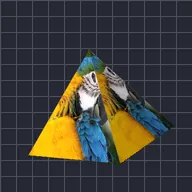

Piramida

Menempatkan lapisan pada sisi-sisi piramida persegi.
Pengaturan
| Pengaturan | Jenis | Rentang | Default |
|---|---|---|---|
| Rotasi X | Sudut | -3600° hingga 3600° | -15° |
| Rotasi Y | Sudut | -3600° hingga 3600° | -35° |
| Rotasi Z | Sudut | -3600° hingga 3600° | 0° |
| Alas | Angka | 0.02 hingga 5 | 0.75 |
| Tinggi | Angka | 0.02 hingga 5 | 1.3 |
| Posisi | Titik (X, Y) | -5000 px hingga 5000 px | 0 px, 0 px |
| Skala | Angka | 0.05 hingga 10 | 1 |
| Perspektif | Angka | 0 hingga 1 | 0.5 |
| Pencahayaan | Angka | 0 hingga 1 | 0.6 |
| Sudut cahaya | Sudut | -3600° hingga 3600° | 135° |
| Kilau | Angka | 0 hingga 1 | 0.3 |
| Mode pencahayaan | Pilihan | Klasik, Lembut, Langsung | Klasik |
| Ambien | Angka | 0 hingga 2 | 0.03 |
| Tinggi cahaya | Angka | 0 hingga 20 | 3 |
| Warna cahaya | Warna | – | #FFFFFF |
| Ketajaman kilau | Angka | 1 hingga 200 | 15 |
| Tekstur | Pilihan | Pas, Ubin, Regangan | Pas |
| Pengulangan X | Angka | 0.01 hingga 100 | 1 |
| Pengulangan Y | Angka | 0.01 hingga 100 | 1 |
| Cermin | Aktif atau nonaktif | – | Nonaktif |
| Sudut tekstur | Sudut | -3600° hingga 3600° | 0° |
| Offset tekstur | Titik (X, Y) | -100 hingga 100 | 0, 0 |
| Pangkas tekstur | Angka | 0.05 hingga 10 | 1 |
| Jangkar tekstur | Pilihan | Pusat, Sudut | Pusat |